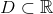
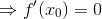
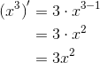
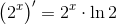
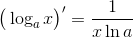
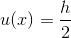

Derivarea funcțiilor elementare
Fie  un interval de numere reale și  punct de acumulare.
punct de acumulare.
Considerăm funcția  .
.
Reamintim definiția derivatei unei funcții într-un punct. (Definiția FD1)
Derivata funcției  în punctul
în punctul  este:
este:
.
Notând cu  expresia
expresia  din relația
din relația  , adică , avem că:
, adică , avem că:
Atunci, pentru  , obținem
, obținem  .
.
Derivata funcției în punctul este:
.
Vom calcula derivatele câtorva din funcțiile elementare. Funcțiile elementare au mai fost studiate în ghidul Limite de funcții, mai precis la secțiunea Limitele funcțiilor elementare, unde s-au calculat limitele acestor funcții prin metoda grafică. Vom ține cont de limitele acestor funcții în ceea ce urmează.
Derivata funcției constante
Fie funcția  ,
,  cu
cu  și
și  .
.
Atunci:
.
.
Exemple:
Derivata funcției putere
Fie , , cu  și .
și .
Avem:

.
În determinarea derivatei pentru funcția putere am aplicat atât binomul lui Newton, cât și operații cu limite de funcții studiate în ghidul Limite de funcții, la secțiunea Operații cu limite de funcții.
Formula de mai sus rămâne adevărată și pentru funcția putere cu exponent real, adică .
 .
.
Exemple:
Aplicăm formula pentru  și obținem:
și obținem:
.
Aplicând formula pentru  , obținem:
, obținem:
.
Pentru  , aplicăm formula și obținem:
, aplicăm formula și obținem:

.
Aplicăm formula pentru și avem:
.
Derivata funcției radical
- Derivata funcției radical de ordin impar
Fie , ![f(x)=\sqrt[n]{x}](https://media.liceunet.ro/files/webbooks/images/354/equations/z73KDxZv-6GDy1VM4b6u6g==.gif) , cu
, cu  ,
,  impar.
impar.
Calculăm derivata acestei funcții efectuând calcule cu puteri și radicali și folosind derivata funcției exponențiale.
Astfel, obținem:
pentru  un număr impar.
un număr impar.
Observăm faptul că domeniul de definiției al funcției derivată pentru funcția radical de ordin impar este . (Numitorul unei fracții nu poate fi nul.)
- Derivata funcției radical de ordin par
Fie  , , cu , par.
, , cu , par.
Calculele pentru aflarea derivatei acestei funcții sunt la fel ca și în cazul funcției radical de ordin impar.
Așadar, ![\begin{align*}{\big(\sqrt[n]{x}\big)}'=\displaystyle\frac{1}{n\sqrt[n]{x^{n-1}}} \end{align*}](../../media/webbooks/397/2634/images/equations/9rq1r9x-uszgb-pmqihtdw==.gif) , par.
, par.
Analog cazului anterior, observăm că numitorul fracției din expresia derivatei nu poate și nul. Deci domeniul de definiției al funcției derivată pentru funcția radical de ordin par este .
Exemple:
-
Vom calcula această derivată prin două metode.
Metoda I: Utilizăm formula pentru .
.
Metoda II: Rescriem radicalul ca funcție putere.
.
Aplicăm formula pentru  .
.
.
Aplicând formula pentru , obținem:
.
Derivata funcției exponențiale
Fie  ,
,  cu
cu  și .
și .
Atunci:
Dar .
În particular, pentru obținem:
Exemple:
În următoarele exemple vom aplica formula pentru  ,
,  și respectiv .
și respectiv .
- ;
- ;
 .
.
Derivata funcției logaritmice
Fie  ,
,  , cu
, cu  și .
și .
![\begin{align*} {f}'(x_0)&=\lim_{h\to 0}\frac{f(x_0+h)-f(x_0)}{h} \\ \\ &=\lim_{h\to 0}\frac{\log_a(x_0+h)-\log_a(x_0)}{h} \\ \\ &=\lim_{h\to 0}\frac{\displaystyle\frac{\ln (x_0+h)}{\ln a}-\displaystyle\frac{\ln x_0}{\ln a}}{h}\\\\ &=\lim_{h\to 0}\frac{1}{\ln a}\cdot \frac{\ln (x_0+h)-\ln x_0}{h}\\\\ &=\frac{1}{\ln a}\cdot \lim_{h\to 0}\frac{\ln (x_0+h)-\ln x_0}{h}\\\\ &=\frac{1}{\ln a}\cdot \lim_{h\to 0}\frac{\ln \displaystyle\frac{x_0+h}{x_0}}{h}\\\\ &=\frac{1}{\ln a}\cdot \lim_{h\to 0}\frac{\ln \left(1+\displaystyle\frac{h}{x_0}\right)}{\displaystyle\frac{h}{x_0}}\cdot \frac{1}{x_0}\\\\ &=\frac{1}{\ln a}\cdot \frac{1}{x_0}\cdot 1\\\\ &=\frac{1}{\ln a\cdot x_0} \end{align*}](../../media/webbooks/397/2634/images/equations/pezz4sgg7blqdmanvjikxg==.gif)
Menționăm faptul că am putut efectua calculele de mai sus datorită proprietăților operațiior cu logaritmi și limite de funcții. Am folosit limita remarcabilă  ,
,  , cu
, cu  , pentru nenul și .
, pentru nenul și .
În particular, vom obține că:
.
Exemple:
Pentru exemplele de mai jos se aplică formula  pentru , și respectiv .
- ;
- ;
.
Derivata funcției sinus
Se dă funcția și . Atunci:
Deci .
Trecerea de la la s-a putut face deoarece:
-  de la numărătorul fracției se simplifică cu ultimul ;
de la numărătorul fracției se simplifică cu ultimul ;
- (Am aplicat limita remarcabilă , , pentru  nenul și .);
-avem

În plus, s-a folosit formula pentru și .
.
Exemple:
Folosind formula , avem că:
- ;
- ;
- .
Derivata funcției cosinus
Se dă funcția și . Avem:
Trecerea de la la s-a putut face deoarece:
- de la numărătorul fracției se simplifică cu ultimul ;
- (S-a aplicat limita de funcții remarcabilă , , pentru nenul și .);
-avem că
Am folosit formula trigonometrică pentru și .
 .
.
Exemple:
Folosind formula , avem că:
- ;
- ;
- .
Vei putea găsi derivatele celorlalte funcții elementare în paginile următorului subcapitol deoarece calculul acestora necesită aplicarea operațiilor cu funcții derivabile.